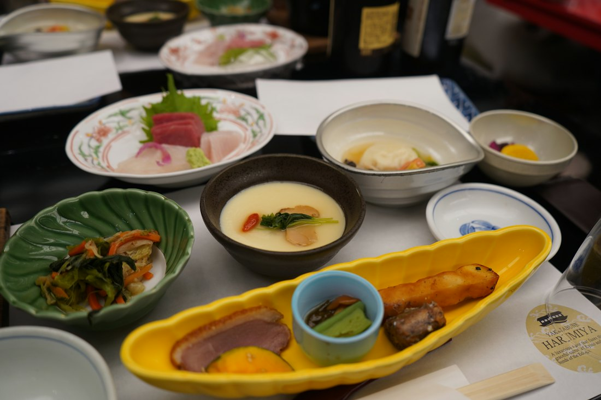
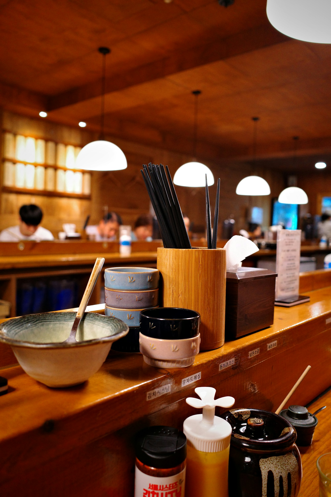
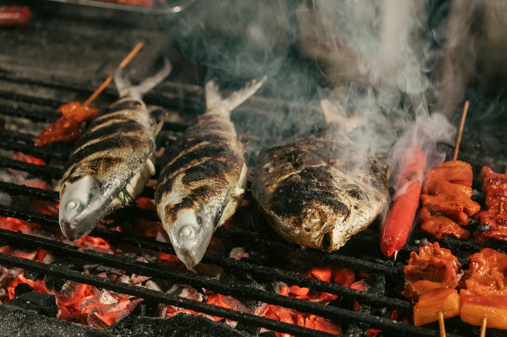

いちばん人気日替わり定食
650円
その朝の市場で決める主菜と、小鉢が3品。

昭和58年から、同じ場所で。ごはんのおかわりは無料、どの定食にも味噌汁と小鉢が付きます。

焼き魚は、注文を受けてから炭火で焼きます。脂の落ちる音を聞きながら、少しだけお待ちください。
| お昼 | 11:00 – 14:30（ラストオーダー 14:00） |
|---|---|
| 夜 | 17:30 – 21:00（ラストオーダー 20:30） |
| 定休日 | 日曜・祝日 |
| 席 | 12席（カウンター6・テーブル6） |
| お支払い | 現金・QR決済 |
駅から歩いて3分。商店街をまっすぐ進み、2つ目の角を過ぎた右手です。
〒000-0000 見本市 中町1-2-3